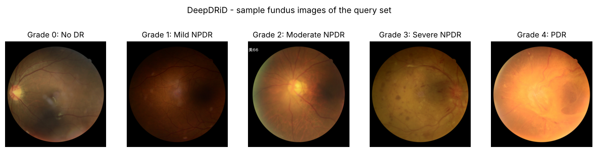
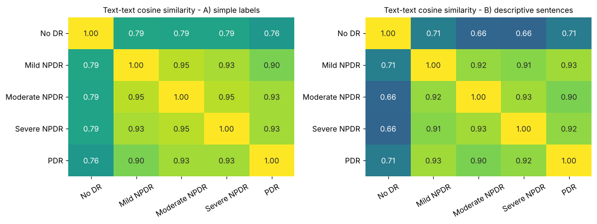
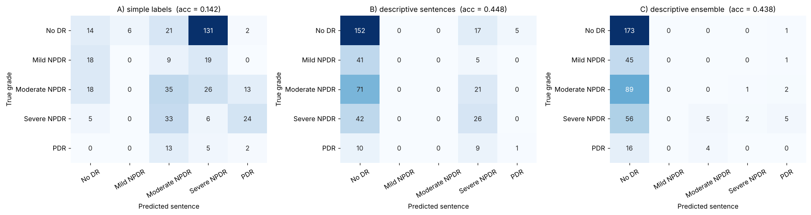

CLIP برای تشخیص Zero-Shot و جستجوی معنایی تصاویر شبکیه
دیتاست DeepDRiD · درجهبندی رتینوپاتی دیابتی · بدون هیچ آموزشی
14% → 45%
دقت با برچسب ساده در برابر توصیف پزشکی
0.51
میانگین Precision@5 در جستجوی متن → تصویر
ViT-B/32
وزنهای ثابت LAION-400M
اسلاید 1 — CLIP برای تشخیص Zero-Shot و جستجوی معنایی تصاویر شبکیه سلام. در این تمرین از مدل CLIP استفاده کردم تا تصاویر شبکیهی چشم را از نظر درجهی رتینوپاتی دیابتی تحلیل کنم؛ هم به شکل تشخیص Zero-Shot و هم جستجوی معنایی. نکتهی اصلی تمرین این است که به جای برچسبهای تککلمهای از جملههای توصیفی پزشکی استفاده شود. هیچ آموزشی انجام نمیشود؛ وزنهای CLIP ثابتاند و کل نوتبوک روی CPU حدود سه دقیقه اجرا میشود. دو نتیجهی اصلی این است: اول، توصیف پزشکی دقت Zero-Shot را از ۱۴ به ۴۵ درصد میرساند، یعنی سه برابر؛ ولی صادقانه باید بگویم این هنوز فقط کمی بهتر از حدس کلاس اکثریت است. دوم، جستجوی متن به تصویر بهتر کار میکند و میانگین Precision در پنج نتیجهی اول ۰٫۵۱ است در برابر ۰٫۲۸ برای جستجوی تصادفی. به ترتیب داده، مدل، پرامپتها، روش Zero-Shot و نتایج را توضیح میدهم.
بخش ۱ · داده
دیتاست DeepDRiD و جدا کردن Query از Gallery

1,600
تصویر از 400 بیمار با درجهی 0 تا 4
400
Query: بخش validation رسمی (100 بیمار)
1,200
Gallery: بخش training رسمی (300 بیمار)
CLIP · DeepDRiD
اسلاید 2 — دیتاست DeepDRiD و جدا کردن Query از Gallery دیتاست DeepDRiD مربوط به چالش ISBI سال ۲۰۲۰ است و ۱۶۰۰ تصویر رنگی شبکیه از ۴۰۰ بیمار دارد. هر تصویر را چشمپزشک با درجهی بینالمللی رتینوپاتی دیابتی برچسب زده: صفر یعنی سالم، یک یعنی خفیف که فقط میکروآنوریسم دارد، دو متوسط با خونریزیهای نقطهای و اگزودای سخت، سه شدید با خونریزی گسترده، و چهار نوع پرولیفراتیو که رگزایی جدید دارد. در تصویر یک نمونه از هر درجه دیده میشود و میبینید که تفاوت درجهها، مخصوصاً درجههای پایین، خیلی ظریف است. یک ستون کیفیت تصویر هم داریم که در بخش جستجو از آن استفاده میکنم. چون CLIP بهصورت Zero-Shot استفاده میشود دادهی آموزشی لازم نیست، ولی طبق صورت تمرین تصاویر را دو دسته کردم: بخش validation رسمی با ۴۰۰ تصویر نقش پرسوجو را دارد و تشخیص روی آن ارزیابی میشود؛ بخش training رسمی با ۱۲۰۰ تصویر گالری است که جستجو در آن انجام میشود. تقسیم در سطح بیمار است و با یک assert چک کردهام که هیچ بیماری در هر دو دسته نباشد. توزیع کلاسها نامتوازن است: ۴۳٫۵ درصد پرسوجوها سالماند و فقط ۵ درصد درجهی چهار؛ این عدد ۴۳٫۵ بعداً بهعنوان خط پایهی کلاس اکثریت مهم میشود.
بخش ۲ · مدل
معماری CLIP: دو رمزگذار، یک فضای مشترک
Image
224×224
Image Encoder
ViT-B/32 · patch 32×32
Text
77 tokens
Text Encoder
Transformer
512-d
L2-normalized
cosine similarity
آموزش Contrastive
روی صدها میلیون زوج (تصویر، متن): بردار تصویر و متن متناظر به هم نزدیک، بقیه دور.
نتیجه
طبقهبندی = مقایسهی یک تصویر با چند جمله؛ جستجو = مقایسهی یک جمله با چند تصویر.
مدل استفادهشده
open_clip، 151.3M پارامتر، logit_scale = 100
CLIP · DeepDRiD
اسلاید 3 — معماری CLIP: دو رمزگذار، یک فضای مشترک CLIP از دو رمزگذار جدا تشکیل شده است. رمزگذار تصویر در اینجا یک Vision Transformer پایه با پچهای ۳۲ در ۳۲ است: تصویر ۲۲۴ در ۲۲۴ به ۴۹ پچ تقسیم میشود و مثل یک جمله از ترنسفورمر عبور میکند. رمزگذار متن هم یک ترنسفورمر است که جمله را تا ۷۷ توکن میگیرد. خروجی هر دو با یک لایهی خطی به یک فضای مشترک ۵۱۲ بعدی نگاشت میشود. مدل با زیان Contrastive آموزش دیده: در هر batch از زوجهای تصویر و متن، شباهت زوجهای درست باید زیاد و شباهت همهی ترکیبهای غلط کم شود. نتیجه این است که شباهت کسینوسی بین بردار یک تصویر و بردار یک جمله، معیار تطابق آن دو است. با همین یک ایده، بدون هیچ آموزش اضافه، دو کار میشود کرد: اگر یک تصویر را با چند جمله مقایسه کنیم طبقهبندی Zero-Shot داریم، و اگر یک جمله را با چند تصویر مقایسه کنیم جستجوی معنایی. من از کتابخانهی open_clip با همان معماری ViT-B/32 مدل اصلی و وزنهای آموزشدیده روی LAION-400M استفاده کردم، چون به سرور وزنهای OpenAI دسترسی نبود؛ با تغییر یک متغیر میشود وزنهای OpenAI را هم بارگذاری کرد. مدل ۱۵۱ میلیون پارامتر دارد و ضریب logit_scale آن ۱۰۰ است که در اسلاید Zero-Shot توضیحش میدهم.
بخش ۲ · مدل
استخراج بردار ویژگی تصویر و متن
پیشپردازش استاندارد CLIP
تغییر اندازه به 224، برش مرکزی و نرمالسازی با میانگین و انحراف معیار CLIP.
نرمالسازی L2
طول هر بردار 1 میشود؛ پس ضرب داخلی همان شباهت کسینوسی است.
یک بار محاسبه
1,600 بردار در 112 ثانیه روی CPU ساخته و در فایل npy ذخیره میشوند.
model, _, preprocess = open_clip.create_model_and_transforms( "ViT-B-32-quickgelu", pretrained=WEIGHTS) model = model.to(device).eval()
@torch.no_grad() def encode_images(paths): for i in range(0, len(paths), BATCH_SIZE): batch = torch.stack([preprocess(Image.open(p)) for p in paths[i:i + BATCH_SIZE]]) feats.append(F.normalize( model.encode_image(batch), dim=-1))
اسلاید 4 — استخراج بردار ویژگی تصویر و متن این بخش کد، پایهی همهی مراحل بعدی است. خط اول مدل و تابع پیشپردازش را از open_clip میسازد و مدل را در حالت eval میگذارد، چون قرار نیست چیزی آموزش ببیند. دو تابع کمکی نوشتم. encode_images فهرست مسیر تصاویر را دستهدسته میخواند، پیشپردازش استاندارد CLIP را اعمال میکند، یعنی تغییر اندازه به ۲۲۴ و برش مرکزی و نرمالسازی، و با model.encode_image بردار ۵۱۲ بعدی میگیرد. encode_texts جملهها را توکنایز میکند و با model.encode_text بردارشان را میگیرد. هر دو تابع دکوراتور no_grad دارند تا گرادیان محاسبه نشود و حافظه و زمان هدر نرود. نکتهی مهم هر دو، F.normalize است: بردارها را به طول یک میرساند، در نتیجه ضرب داخلی دو بردار مستقیماً همان شباهت کسینوسی است و در بقیهی کد فقط با یک ضرب ماتریسی کار میکنم. بردار همهی ۱۶۰۰ تصویر یک بار حساب میشود، حدود دو دقیقه روی CPU، و در یک فایل ذخیره میشود تا در اجراهای بعدی از cache خوانده شود. بعد این بردارها به دو ماتریس تقسیم میشوند: ۴۰۰ در ۵۱۲ برای پرسوجوها و ۱۲۰۰ در ۵۱۲ برای گالری.
بخش ۳ · پرامپتها
سه نوع برچسب متنی برای هر درجه
A · برچسب ساده
“a photo of moderate retinopathy”
B · جملهی توصیفی پزشکی
“A fundus image showing moderate non-proliferative diabetic retinopathy with dot and blot hemorrhages and hard exudates”
C · مجموعهی توصیفها
سه جملهی توصیفی برای هر درجه؛ بردار کلاس = میانگین نرمالشدهی آنها.
شباهت متن با متن: بردار جملههای سادهی کلاسها به هم خیلی نزدیکاند؛ جملههای توصیفی کلاس «سالم» را از بقیه دورتر میکنند.

CLIP · DeepDRiD
اسلاید 5 — سه نوع برچسب متنی برای هر درجه ایدهی اصلی تمرین همین اسلاید است. برای هر کدام از پنج درجهی بیماری سه نوع متن تعریف کردم تا اثر توصیف پزشکی را اندازه بگیرم. نوع A برچسب ساده است به سبک معمول Zero-Shot، مثل «a photo of moderate retinopathy». نوع B برای هر درجه یک جملهی توصیفی است که علائم بالینی همان درجه را میگوید، همانطور که در متون چشمپزشکی میآید: برای سالم، دیسک اپتیک و رگهای واضح؛ برای خفیف، چند میکروآنوریسم؛ برای متوسط، خونریزیهای نقطهای و اگزودای سخت؛ برای شدید، خونریزی گسترده و venous beading؛ و برای پرولیفراتیو، رگزایی جدید. سه جملهی نمونهی صورت تمرین هم در همین فهرست هستند. نوع C یک Prompt Ensemble است: برای هر درجه سه جملهی توصیفی متفاوت، که بردارهایشان میانگینگیری و دوباره نرمال میشود تا یک بردار نماینده برای کلاس به دست آید. قبل از طبقهبندی، شباهت خود جملهها با هم را هم رسم کردم که در تصویر پایین است. هر چه جملههای کلاسهای مختلف در فضای CLIP از هم دورتر باشند، جدا کردن کلاسها سادهتر است. جملههای ساده فقط در یک کلمه با هم فرق دارند و بردارهایشان خیلی به هم نزدیک است؛ جملههای توصیفی تمایز بیشتری ایجاد میکنند، مخصوصاً بین سالم و بیمار.
probs = zero_shot_probs(emb_q, txt_desc) pred = probs.argmax(1) # (400,)
CLIP · DeepDRiD
اسلاید 6 — شباهت کسینوسی، ضریب دما و softmax روش Zero-Shot در عمل فقط چند خط کد است. ماتریس بردار تصاویر پرسوجو، ۴۰۰ در ۵۱۲، در ترانهادهی ماتریس بردار جملهها، ۵ در ۵۱۲، ضرب میشود. چون بردارها نرمالاند، نتیجه یک ماتریس ۴۰۰ در ۵ از شباهتهای کسینوسی است. این شباهتها در ضریب logit_scale ضرب میشوند و روی هر سطر softmax گرفته میشود تا برای هر تصویر یک توزیع احتمال روی پنج جمله داشته باشیم؛ کلاس پیشبینیشده جملهای است که بیشترین احتمال را دارد. ضریب ۱۰۰ از کجا آمده؟ این همان معکوس دمایی است که خود CLIP در آموزش یاد گرفته و من آن را از مدل خواندهام. جدول سمت راست نشان میدهد چرا لازم است. برای یک تصویر سالم، شباهت کسینوسی با پنج جمله خیلی به هم نزدیک است: از ۰٫۳۳۵ تا ۰٫۳۷۲، یعنی اختلاف در حد چند صدم. اگر بدون ضریب softmax بگیریم، احتمالها تقریباً یکنواخت میشوند، همه حدود بیست درصد. با ضریب ۱۰۰ همین اختلافهای کوچک به یک توزیع معنادار تبدیل میشود: ۷۴ درصد برای جملهی سالم. نکتهی مهم این است که تغییر دما کلاس برنده را عوض نمیکند، چون ترتیب شباهتها ثابت است؛ فقط میزان اطمینان توزیع را تغییر میدهد.
بخش ۴ · نتایج Zero-Shot
اثر توصیف پزشکی روی 400 تصویر Query
AUC
κ
Balanced
Accuracy
روش
0.518
−0.02
13.0%
14.3%
A · برچسب ساده
0.691
0.23
26.1%
44.8%
B · جملهی توصیفی
0.725
0.12
20.5%
43.8%
C · مجموعهی توصیفها

خط پایهی کلاس اکثریت 43.5% است. با پرامپت B مدل تقریباً فقط «سالم» یا «Severe» میگوید و درجههای 1 و 2 را هرگز پیشبینی نمیکند.
CLIP · DeepDRiD
اسلاید 7 — اثر توصیف پزشکی روی 400 تصویر Query این نتیجهی اصلی بخش Zero-Shot است. چهار معیار گزارش کردهام: دقت معمولی؛ دقت متوازن که میانگین recall کلاسهاست و برای دادهی نامتوازن منصفانهتر است؛ کاپای وزندار درجه دو که معیار استاندارد درجهبندی رتینوپاتی است و اشتباههای دورتر را بیشتر جریمه میکند؛ و AUC برای تفکیک دودویی بیمار از سالم. با برچسب ساده، دقت فقط ۱۴ درصد است و AUC تقریباً نیم؛ یعنی مدل عملاً تصادفی است و در ماتریس درهمریختگی سمت چپ دیده میشود که بیشتر تصاویر سالم را هم severe مینامد. با جملههای توصیفی دقت به ۴۵ درصد و AUC به ۰٫۶۹ میرسد؛ یعنی واژگان بالینی مثل optic disc و hemorrhage و exudate جمله را به ناحیهی درستتری از فضای مشترک میبرند. اما باید صادق باشم: خط پایهی حدس زدنِ همیشه «سالم» ۴۳٫۵ درصد است، پس ۴۵ درصد فقط کمی بهتر از آن است. ماتریس وسط دلیلش را نشان میدهد: مدل تقریباً فقط بین سالم و Severe انتخاب میکند و درجههای یک و دو را هرگز پیشبینی نمیکند. تفاوت این درجهها ضایعات خیلی ریز مثل میکروآنوریسم است که در ورودی ۲۲۴ در ۲۲۴ تقریباً دیده نمیشوند و در دادهی آموزشی عمومی CLIP هم نمونهی کافی نداشتهاند. Ensemble تفکیک بیمار و سالم را بهتر کرد، AUC برابر ۰٫۷۲، ولی پیشبینیها را بیشتر به سمت سالم برد.
اسلاید 8 — جستجوی متن → تصویر در Gallery در جستجوی معنایی جهت مقایسه برعکس میشود: یک توصیف متنی میدهیم و ۱۲۰۰ تصویر گالری بر اساس شباهت کسینوسی با آن مرتب میشوند. تابع retrieve فقط سه خط است: بردار جمله را میگیرد، در ماتریس گالری ضرب میکند و با argsort مرتب میکند. هفت پرسوجو تعریف کردم: پنج جملهی توصیفی درجهها و دو پرسوجوی آزاد که مستقیماً برچسب کلاس نیستند؛ یکی توصیف ضایعه است، «شبکیه با خونریزیهای قرمز و اگزودای زرد»، که تصاویر مرتبطش درجهی دو به بالا هستند، و دیگری توصیف کیفیت، «تصویر تار با آرتیفکت»، که با ستون کیفیت دیتاست سنجیده میشود. معیار اصلی Precision در پنج نتیجهی اول است و آن را با Base rate مقایسه میکنم، یعنی کسر تصاویر مرتبط در کل گالری که همان دقت یک جستجوی تصادفی است. برای شبکیهی سالم و برای توصیف ضایعه، هر پنج نتیجهی اول درستاند. برای Severe چهار از پنج درست است در حالی که فقط ۱۸ درصد گالری این درجه را دارد. ولی برای Mild هیچکدام از پنج نتیجه درست نیست، که با نتیجهی طبقهبندی همخوان است. میانگین هفت پرسوجو ۰٫۵۱ است در برابر ۰٫۲۸ تصادفی. پس جستجو از طبقهبندی بهتر کار میکند، چون فقط به چند نتیجهی اول نگاه میکنیم و CLIP علائم واضح و درشت را خوب میگیرد. در تصویر، قاب سبز یعنی مرتبط و قرمز یعنی نامرتبط.
بخش ۶ · مقایسه با روشهای نظارتشده
ضعف از رمزگذار تصویر است یا از تطابق متن؟
AUC
κ
Accuracy
روش
0.691
0.23
44.8%
Zero-Shot (B)
0.842
0.48
54.5%
k-NN, k = 10
0.905
0.71
63.5%
Linear Probe
k-NN و Linear Probe از برچسبهای Gallery استفاده میکنند. بردارهای تصویر اطلاعات بیماری را دارند؛ گلوگاه، تطابق متن عمومی با تصویر پزشکی است.
اسلاید 9 — ضعف از رمزگذار تصویر است یا از تطابق متن؟ بعد از دیدن نتیجهی متوسط Zero-Shot این سؤال پیش میآید: مشکل از کجاست؟ آیا رمزگذار تصویر CLIP اصلاً اطلاعات بیماری را در بردارش ندارد، یا مشکل از تطابق جمله با تصویر است؟ برای جواب دادن، از همان بردارهای تصویر به دو روش دیگر استفاده کردم که از برچسبهای گالری کمک میگیرند و دیگر Zero-Shot نیستند. روش اول k-NN یا همان جستجوی تصویر به تصویر است: برای هر تصویر پرسوجو، ده تصویر شبیهتر در گالری پیدا میشود و درجهی اکثریت آنها پیشبینی است. روش دوم Linear Probe است: یک رگرسیون لجستیک ساده روی بردارهای گالری آموزش میبیند و روی پرسوجوها آزمایش میشود. هر کدام یک خط کد است که پایین اسلاید آمده. نتیجه روشن است: k-NN به ۵۴٫۵ درصد و Linear Probe به ۶۳٫۵ درصد دقت و کاپای ۰٫۷۱ و AUC برابر ۰٫۹ میرسد. پس بردارهای تصویر CLIP اطلاعات مربوط به بیماری را دارند و یک طبقهبند خطی ساده میتواند آن را بیرون بکشد. گلوگاه، طرف متن است: CLIP عمومی روی زوجهای تصویر و متن اینترنتی آموزش دیده و ارتباط دقیق بین اصطلاحات چشمپزشکی و ظاهر ضایعات را خوب یاد نگرفته. این همان دلیلی است که مدلهای تخصصی پزشکی مثل نسخههای آموزشدیده روی دادهی پزشکی ساخته شدهاند.
آمادگی برای پرسش
پرسشهای احتمالی استاد
Zero-Shot یعنی چه؟
هیچ نمونهی برچسبدار از این کلاسها دیده نشده؛ کلاسها فقط با متن تعریف میشوند.
چرا Accuracy کافی نیست؟
داده نامتوازن است؛ Balanced Accuracy و κ وزندار منصفانهترند.
چرا Ensemble بهتر نشد؟
AUC بهتر شد، ولی میانگینگیری پیشبینیها را به سمت «سالم» برد.
چطور میشود نتیجه را بهتر کرد؟
CLIP تخصصی پزشکی، ورودی با وضوح بالاتر، یا fine-tune با چند نمونه.
CLIP · DeepDRiD
اسلاید 10 — پرسشهای احتمالی استاد این اسلاید برای آمادگی خودم است. Zero-Shot: مدل هیچ تصویر برچسبدار شبکیه برای این کار ندیده و هیچ وزنی بهروز نشده؛ کلاسها فقط با جمله تعریف شدهاند و تصمیم از مقایسهی شباهت میآید. چرا دقت کافی نیست: ۴۳٫۵ درصد تصاویر سالماند، پس مدلی که همیشه بگوید سالم ۴۳٫۵ درصد دقت دارد؛ دقت متوازن میانگین recall کلاسهاست و کاپای وزندار هم ترتیب درجهها را در نظر میگیرد، یعنی اشتباه گرفتن درجهی صفر با چهار بدتر از صفر با یک حساب میشود. چرا Ensemble بهتر نشد: میانگین سه جمله بردار کلاس را هموارتر میکند؛ این برای تفکیک کلی بیمار از سالم خوب بود و AUC را بالا برد، ولی مرز بین درجهها را محوتر کرد. بهبود: مدلهای CLIP آموزشدیده روی دادهی پزشکی، ورودی با وضوح بیشتر چون ضایعات ریزند، یا روشهای few-shot مثل Linear Probe که دیدیم با همان بردارها به ۶۳ درصد میرسد. چند پرسش دیگر: چرا نرمالسازی L2؟ تا ضرب داخلی همان کسینوس باشد و طول بردار اثر نگذارد. چرا وزن LAION و نه OpenAI؟ معماری یکی است و فقط دسترسی به سرور وزنها مسئله بود؛ با یک متغیر عوض میشود. تفاوت P@5 و AP؟ اولی فقط پنج نتیجهی اول را میبیند و دومی کل رتبهبندی را. چرا تقسیم در سطح بیمار؟ چون از هر چشم دو تصویر داریم و بدون آن k-NN تصویر دوم همان چشم را پیدا میکرد.
جمعبندی
توصیف پزشکی دقت CLIP را سه برابر میکند، ولی برای درجهبندی ریز کافی نیست
پرامپت
برچسب ساده 14%؛ جملهی توصیفی 45%؛ خط پایه 43.5%.
جستجو
P@5 = 0.51 در برابر 0.28؛ برای علائم واضح خوب، برای Mild ضعیف.
گلوگاه
تطابق متن و تصویر؛ Linear Probe روی همان بردارها به 63.5% میرسد.
اسلاید 11 — توصیف پزشکی دقت CLIP را سه برابر میکند، ولی برای درجهبندی ریز کافی نیست جمعبندی میکنم. اول، نوع پرامپت خیلی مهم است: با برچسب ساده CLIP عملاً تصادفی است، ۱۴ درصد، و با جملههای توصیفی پزشکی به ۴۵ درصد میرسد. دوم، با این حال Zero-Shot با CLIP عمومی برای درجهبندی ریز رتینوپاتی کافی نیست؛ دقت فقط کمی بالاتر از حدس کلاس اکثریت است و درجههای یک و دو تشخیص داده نمیشوند. سوم، جستجوی معنایی متن به تصویر کاربردیتر است: برای توصیفهای واضح مثل شبکیهی سالم یا خونریزی و اگزودا، نتایج اول تقریباً همه درستاند. چهارم، آزمایش k-NN و Linear Probe نشان داد بردارهای تصویر CLIP اطلاعات بیماری را دارند و ضعف اصلی در تطابق متن عمومی با تصویر پزشکی است. پس کاربرد واقعبینانهی این سیستم، جستجو و غربالگری اولیه است نه تشخیص نهایی، و برای تشخیص باید از مدل تخصصی پزشکی یا مقدار کمی دادهی برچسبدار استفاده کرد. ممنون از توجهتان.